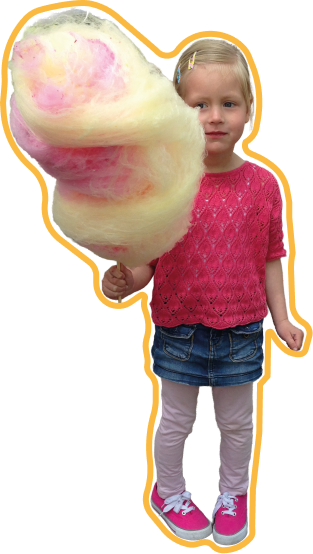

OVER MIJ

Hoi! Ik ben Dewi van Schaik, ik ben 17 jaar en op 12 november word ik 18. Ik studeer CMD aan de HvA en ben eigenlijk altijd wel met iets creatiefs bezig. Ik woon deels in Nieuwegein bij mijn vader en deels in Amsterdam bij mijn moeder. Ik heb een superleuke vriendengroep die we My Sheila noemen :) Met hen ben ik vaak op pad en maken we veel leuke herinneringen. Ik vind het vooral leuk om nieuwe projectjes en ideeën te bedenken en gewoon lekker creatief bezig te zijn!